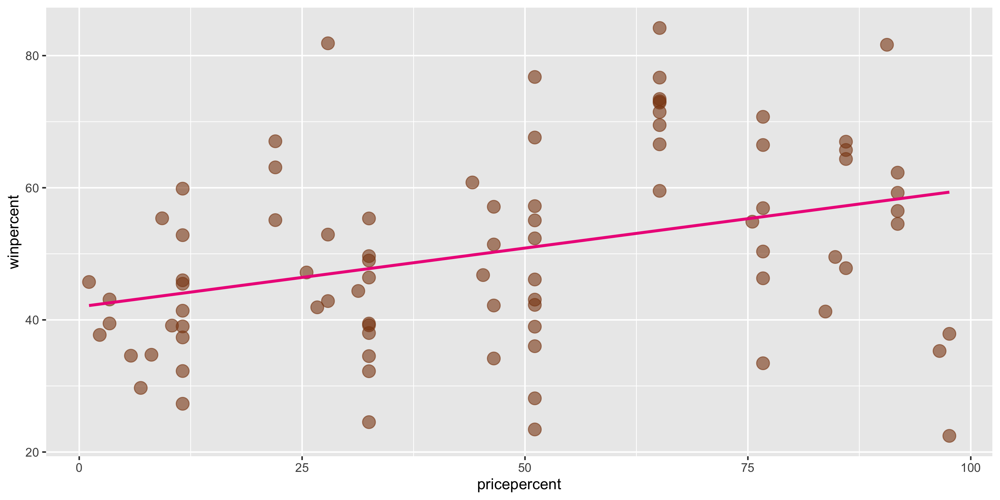
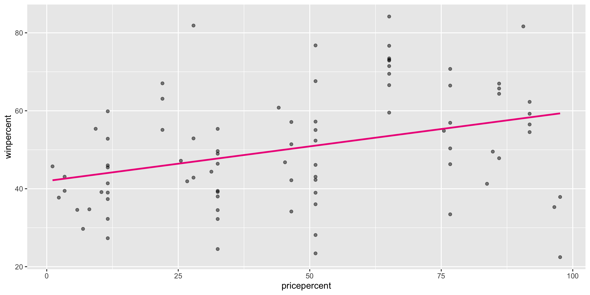
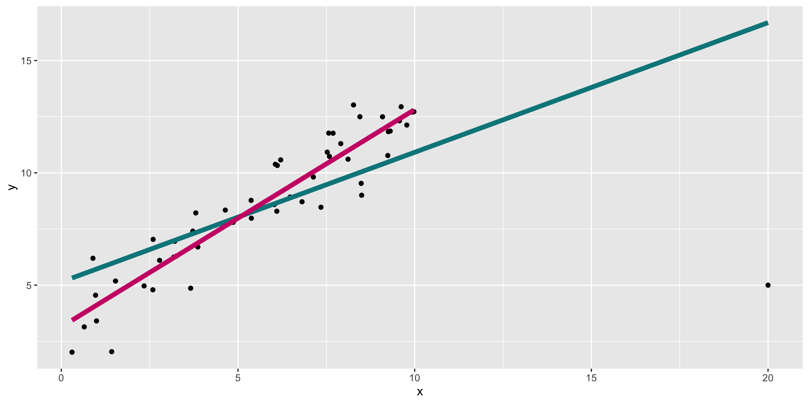

SLR II: Regression Assumptions
Grayson White
Math 141
Week 4 | Fall 2025
Announcements
- Lab tomorrow meets in the thesis tower.
- Fill out the Week 4 Survey
Goals for Today
- Recall simple linear regression
- Do simple linear regression in R
- Discuss model assumptions for linear regression
Form of the Model
\[ y = f(x) + \epsilon \]
Goal:
Determine a reasonable form for \(f()\). (Ex: Line, curve, …)
Estimate \(f()\) with \(\hat{f}()\) using the data.
Generate predicted values: \(\hat y = \hat{f}(x)\).
Simple Linear Regression Model
\[ y = \beta_o + \beta_1 x + \epsilon \]
Consider this model when:
Response variable \((y)\): quantitative
Explanatory variable \((x)\): quantitative
- Have only ONE explanatory variable.
AND, \(f()\) can be approximated by a line.
Need to determine the best estimates of \(\beta_o\) and \(\beta_1\).
Distinguishing between the population and the sample
\[ y = \beta_o + \beta_1 x + \epsilon \]
- Parameters:
- Based on the population
- Unknown then if don’t have data on the whole population
- EX: \(\beta_o\) and \(\beta_1\)
\[ \hat{y} = \hat{ \beta}_o + \hat{\beta}_1 x \]
- Statistics:
- Based on the sample data
- Known
- Usually estimate a population parameter
- EX: \(\hat{\beta}_o\) and \(\hat{\beta}_1\)
Our Modeling Goal
Recall our modeling goal: predict win percentage by using the price percentage variable.
candy <- read_csv("https://raw.githubusercontent.com/fivethirtyeight/data/master/candy-power-ranking/candy-data.csv") %>%
mutate(pricepercent = pricepercent*100)
ggplot(data = candy,
mapping = aes(x = pricepercent,
y = winpercent)) +
geom_point(alpha = 0.6, size = 4,
color = "chocolate4") +
geom_smooth(method = "lm", se = FALSE,
color = "deeppink2")
Method of Least Squares
Want residuals to be small.
Minimize a function of the residuals.
Minimize:
\[ \sum_{i = 1}^n e^2_i \]
Method of Least Squares
After minimizing the sum of squared residuals, you get the following equations:
Get the following equations:
\[ \begin{align} \hat{\beta}_1 &= \frac{ \sum_{i = 1}^n (x_i - \bar{x}) (y_i - \bar{y})}{ \sum_{i = 1}^n (x_i - \bar{x})^2} \\ \hat{\beta}_o &= \bar{y} - \hat{\beta}_1 \bar{x} \end{align} \] where
\[ \begin{align} \bar{y} = \frac{1}{n} \sum_{i = 1}^n y_i \quad \mbox{and} \quad \bar{x} = \frac{1}{n} \sum_{i = 1}^n x_i \end{align} \]
Method of Least Squares
Then we can estimate the whole function with:
\[ \hat{y} = \hat{\beta}_o + \hat{\beta}_1 x \]
Called the least squares line or the line of best fit.
Constructing the Simple Linear Regression Model in R
We can use the lm() function to construct the simple linear regression model in R.
# A tibble: 2 × 7
term estimate std_error statistic p_value lower_ci upper_ci
<chr> <dbl> <dbl> <dbl> <dbl> <dbl> <dbl>
1 intercept 41.979 2.908 14.435 0 36.195 47.763
2 pricepercent 0.178 0.053 3.352 0.001 0.072 0.283What is the fitted model form?
\[\begin{align*} \hat{y} &= \hat{\beta_o} + \hat{\beta_1} \times x_{pricepercent} \\ &= 41.979 + 0.178 \times x_{pricepercent} \end{align*}\]
How do we interpret the coefficients?
Coefficient Interpretation
\[\begin{align*} \hat{y} &= \hat{\beta}_o + \hat{\beta}_1 \times x_{pricepercent} \\ &= 41.979 + 0.178 \times x_{pricepercent} \end{align*}\]
We need to be precise and careful when interpreting estimated coefficients!
Intercept: We expect/predict \(y\) to be \(\hat{\beta}_o\) on average when \(x = 0\).
Slope: For a one-unit increase in \(x\), we expect/predict \(y\) to change by \(\hat{\beta}_1\) units on average.
These interpretations are non-specific to the context of our model, but when we are interpreting coefficients, we always need to interpret the coefficients in context
Coefficient Interpretation: In Context
\[\begin{align*} \hat{y} &= \hat{\beta}_o + \hat{\beta}_1 \times x_{pricepercent} \\ &= 41.979 + 0.178 \times x_{pricepercent} \end{align*}\]
Intercept: We expect/predict a candy’s win percentage to be 41.979 on average when their price percentage is 0.
Slope: For a one-unit increase in price percentage, we expect/predict the win percentage of a candy to change by 0.178 units on average.
Prediction
1 2 3
46.42443 57.09409 68.65289 - We didn’t have any treats in our sample with a price percentage of 85%. Can we still make this prediction?
- Called interpolation
- We didn’t have any treats in our sample with a price percentage of 150%. Can we still make this prediction?
- Called extrapolation
Cautions
Careful to only predict values within the range of \(x\) values in the sample.
Make sure to investigate outliers: observations that fall far from the cloud of points.
- High leverage points
A closer look at our model
# A tibble: 2 × 7
term estimate std_error statistic p_value lower_ci upper_ci
<chr> <dbl> <dbl> <dbl> <dbl> <dbl> <dbl>
1 intercept 41.979 2.908 14.435 0 36.195 47.763
2 pricepercent 0.178 0.053 3.352 0.001 0.072 0.283\[\begin{align*} \hat{y} &= \hat{\beta_o} + \hat{\beta_1} \times x_{pricepercent} \\ &= 41.979 + 0.178 \times x_{pricepercent} \end{align*}\]
What assumptions have we made?
Linear Regression Assumptions
We can always find the line of best fit to explore data, but…
To make accurate predictions or inferences, certain conditions should be met.
To responsibly use linear regression tools for prediction or inference, we require:
Linearity: The relationship between explanatory and response variables must be approximately linear
- Check using scatterplot of data, or residual plot
Independence: The observations should be independent of one another.
- Can check by considering data context, and
- by looking at residual scatterplots too
Normality: The distribution of residuals should be approximately bell-shaped, unimodal, symmetric, and centered at 0 at every “slice” of the explanatory variable
- Simple check: look at histogram of residuals
- Better to use a “Q-Q plot”
Equal Variability: Variance of residuals should be roughly constant across data set. Also called “homoscedasticity”. Models that violate this assumption are sometimes called “heteroscedastic”
- Check using residual plot.
A cute way to remember this: “LINE”
Linearity
Independence
Normality
Equal Variability
Assessing conditions: diagnostics plots
In order to assess if we’ve met the described conditions, we will utilize four common diagnostics plots:
- Residual vs. fitted plot (i.e. ‘residual plot’)
- for assessing linearity, independence, and equal variability
- Normal Q-Q plot
- for assessing normality
- Residual histogram
- for assessing normality
- Residual vs. leverage plot
- for assessing the influence of outliers

Recall out simple linear regression model

Let’s check if this meets the LINE assumptions
Residual vs. fitted plot
Linearity: ✅
Independence: ✅
Equal Variability: ✅
Checking normality: residual histogram
- Normality: ü§î
- Looks pretty good!
- We’ll look at a Q-Q plot to further assess!
Checking normality: Q-Q plot
- Normality: ✅
Checking outliers: Residuals vs. leverage plot
- Looks pretty good! ü§©
Now let’s look at some models that violate these assumptions…
New model
Predicting miles per gallon from engine displacement
New model
# A tibble: 32 × 5
ID mpg disp mpg_hat residual
<int> <dbl> <dbl> <dbl> <dbl>
1 1 21 160 23.0 -2.00
2 2 21 160 23.0 -2.00
3 3 22.8 108 25.1 -2.35
4 4 21.4 258 19.0 2.43
5 5 18.7 360 14.8 3.94
6 6 18.1 225 20.3 -2.23
7 7 14.3 360 14.8 -0.462
8 8 24.4 147. 23.6 0.846
9 9 22.8 141. 23.8 -0.997
10 10 19.2 168. 22.7 -3.49
# ℹ 22 more rowsDiagnostics: residual vs. fitted plot
Linearity: ❌
Independence: ❌
Equal Variability: ❓
Checking normality
- Normality: Not horrible, but surely could be better!
Another example: high leverage points
Remember the example from last time:

What do diagnostics look like when we fit the teal model?
Diagnosing the model

- In this case, can already see the outlier in the residual vs fitted plot.
Residual vs. leverage
What to do with high leverage points?
- Depends on context
- It may be reasonable to remove them and refit the model
A shortcut for diagnosing: gglm::gglm()
You can see many of the diagnostic plots at once with the gglm() function from the gglm package.
Let’s use that function to diagnose the pink model